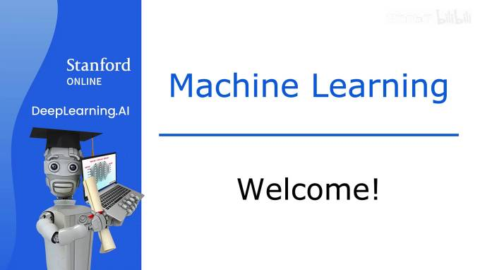
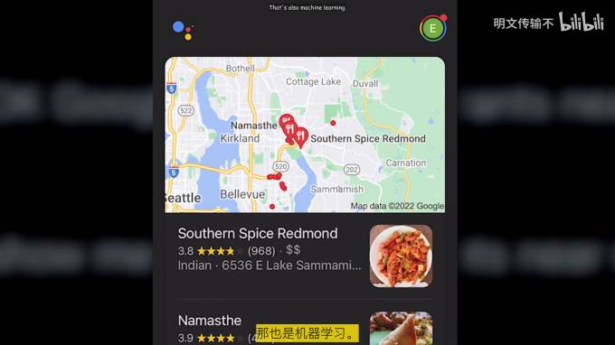

00:08你可能每天都在使用它，甚至自己都没有意识到。

00:13每当你想了解某件事，比如怎么做寿司卷，你可以在谷歌、必应或百度上进行网页搜索来找到答案。
00:24这些搜索引擎能运行得这么好，是因为它们的机器学习软件已经学会了如何对网页进行排名。
00:33或者当你把照片上传到 Instagram 或 Snapchat 时，心里想着，我想给我的朋友们打上标签，这样他们就能看到这些照片了。
00:44那么，这些应用能够识别照片中的朋友，并为他们打上标签。
00:52又或者你刚在视频流媒体服务上看完一部星球大战电影，心想，我还能看哪些类似的电影呢？
01:01这时，流媒体服务很可能会用机器学习来推荐一些你可能喜欢的影片。
01:08每次你在手机上使用语音转文字功能来写短信，比如，嘿 Andrew，最近怎么样？
01:15或者对你的手机说，嘿 Siri，播放一首蕾哈娜的歌。
01:22或者对你的另一部手机说，给我看看附近的印度餐厅。

01:31每次你收到一封标题为“恭喜，你赢得了一百万美元”的邮件。
01:37嗯，也许你真的发财了，恭喜你。
01:42但更有可能的是，你的邮箱服务会将其标记为垃圾邮件。
01:48这也是机器学习的一个应用。
01:52除了你可能会用到的这些消费类应用，人工智能也正迅速进入大公司和工业应用领域。
02:01例如，我对气候变化深感担忧，并且很高兴地看到机器学习已经在帮助优化风力涡轮机的发电效率。
02:13在医疗保健领域，它也开始进入医院，帮助医生做出准确的诊断。
02:20最近在 Landing AI，我做了很多工作，将计算机视觉引入工厂，用来检查从装配线下线的产品是否存在任何缺陷。
02:34它是一门让计算机无需显式编程就能自主学习的科学。
02:40在本课程中，你将学习机器学习，并亲自用代码来实现它。
02:47已有数百万人学习过本课程的早期版本，这门课程也促成了 Coursera 的创立。
02:55许多学习者最终构建了令人惊叹的机器学习系统，甚至在人工智能领域取得了非常成功的职业生涯。
03:04很高兴你能和我一起踏上这段学习之旅。